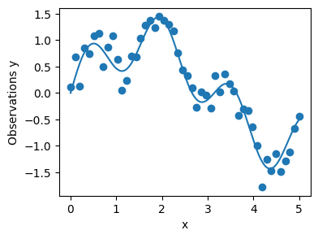

!pip install "gpytorch"Basic GP Regression (Pytorch and GPyTorch)

This notebook shows how to do Gaussian process regression:
define a GP prior, 2) learn kernel hyperparameters by marginal likelihood,
make predictions, and 4) repeat the same using GPyTorch.
import math
import os
import gpytorch
import matplotlib.pyplot as plt
import numpy as np
import torch
from scipy import optimize
from scipy.spatial import distance_matrix
plt.rcParams["figure.figsize"] = (4, 3)
# simple RBF kernel (squared‑exponential)
def rbf_kernel(X, Y, ls=1.0, amp=1.0):
X = np.atleast_2d(X).reshape(-1, 1)
Y = np.atleast_2d(Y).reshape(-1, 1)
d2 = distance_matrix(X, Y) ** 2
return amp**2 * np.exp(-0.5 * d2 / ls**2)Gaussian Process Regression
We observe noisy data y(x) = f(x) + ε with ε ~ N(0, σ²).
A GP prior f(x) ~ GP(0, k) with RBF kernel defines a distribution over functions.
For regression, the posterior over f and the predictive distribution are available in closed form.
Synthetic data
def data_maker1(x, sig):
x = np.asarray(x)
return np.sin(x) + 0.5 * np.sin(4 * x) + np.random.randn(*x.shape) * sig
sig = 0.25
train_x = np.linspace(0, 5, 50)
test_x = np.linspace(0, 5, 500)
train_y = data_maker1(train_x, sig=sig)
test_y = data_maker1(test_x, sig=0.0)
plt.scatter(train_x, train_y)
plt.plot(test_x, test_y)
plt.xlabel("x")
plt.ylabel("Observations y")
plt.show()
Circles are noisy observations, the blue curve is the underlying noise‑free function.
Prior GP samples
mean = np.zeros_like(test_x)
cov = rbf_kernel(test_x, test_x, ls=0.2)
prior_samples = np.random.multivariate_normal(mean=mean, cov=cov, size=5)
plt.plot(test_x, prior_samples.T, color="black", alpha=0.5)
plt.plot(test_x, mean, linewidth=2.)
std = np.sqrt(np.diag(cov))
plt.fill_between(test_x, mean - 2 * std, mean + 2 * std, alpha=0.25)
plt.show()
Short length‑scale gives very wiggly sample functions.
Hyperparameter learning (from scratch)
ell_est = 0.4
post_sig_est = 0.5
def neg_MLL(pars):
ell, noise = pars
K = rbf_kernel(train_x, train_x, ls=ell)
Ky = K + noise**2 * np.eye(*train_x.shape)
L = np.linalg.cholesky(Ky)
alpha = np.linalg.solve(L.T, np.linalg.solve(L, train_y))
kernel_term = -0.5 * train_y @ alpha
logdet = -np.sum(np.log(np.diag(L)))
const = -0.5 * train_x.shape[0] * np.log(2 * np.pi)
return -(kernel_term + logdet + const)
res = optimize.minimize(
neg_MLL,
x0=np.array([ell_est, post_sig_est]),
bounds=((0.01, 10.), (0.01, 10.))
)
ell, post_sig_est = res.x
print("Learned length‑scale:", ell)
print("Learned noise std:", post_sig_est)Learned length‑scale: 0.5780687474139707
Learned noise std: 0.22470850523850983Now we compute the posterior mean and covariance at test points.
K_x_x = rbf_kernel(train_x, train_x, ls=ell)
K_x_xstar = rbf_kernel(train_x, test_x, ls=ell)
K_xstar_xstar = rbf_kernel(test_x, test_x, ls=ell)
Ky = K_x_x + post_sig_est**2 * np.eye(*train_x.shape)
L = np.linalg.cholesky(Ky)
alpha = np.linalg.solve(L.T, np.linalg.solve(L, train_y))
post_mean = K_x_xstar.T @ alpha
v = np.linalg.solve(L, K_x_xstar)
post_cov = K_xstar_xstar - v.T @ v
post_std = np.sqrt(np.diag(post_cov))
lw_bd = post_mean - 2 * post_std
up_bd = post_mean + 2 * post_std
plt.scatter(train_x, train_y)
plt.plot(test_x, test_y, linewidth=2.)
plt.plot(test_x, post_mean, linewidth=2.)
plt.fill_between(test_x, lw_bd, up_bd, alpha=0.25)
plt.legend(["True Function", "Predictive Mean", "Observed Data", "95% set (latent)"])
plt.show()
The posterior mean closely follows the true function.
The shaded band is a 95% credible set for the latent noise‑free function f(x).
To include observation noise in the band, add σ² on the diagonal:
lw_bd_obs = post_mean - 2 * np.sqrt(post_std**2 + post_sig_est**2)
up_bd_obs = post_mean + 2 * np.sqrt(post_std**2 + post_sig_est**2)Posterior samples
post_samples = np.random.multivariate_normal(post_mean, post_cov, size=20)
plt.scatter(train_x, train_y)
plt.plot(test_x, test_y, linewidth=2.)
plt.plot(test_x, post_mean, linewidth=2.)
plt.plot(test_x, post_samples.T, color="gray", alpha=0.25)
plt.fill_between(test_x, lw_bd, up_bd, alpha=0.25)
plt.legend(["True Function", "Predictive Mean", "Observed Data", "Posterior Samples"])
plt.show()
Next we reproduce the same regression using GPyTorch.
GPyTorch implementation
train_x_t = torch.tensor(train_x, dtype=torch.float32)
train_y_t = torch.tensor(train_y, dtype=torch.float32)
test_x_t = torch.tensor(test_x, dtype=torch.float32)
test_y_t = torch.tensor(test_y, dtype=torch.float32)
class ExactGPModel(gpytorch.models.ExactGP):
def __init__(self, train_x, train_y, likelihood):
super().__init__(train_x, train_y, likelihood)
self.mean_module = gpytorch.means.ZeroMean()
self.covar_module = gpytorch.kernels.ScaleKernel(
gpytorch.kernels.RBFKernel()
)
def forward(self, x):
mean_x = self.mean_module(x)
covar_x = self.covar_module(x)
return gpytorch.distributions.MultivariateNormal(mean_x, covar_x)
likelihood = gpytorch.likelihoods.GaussianLikelihood()
model = ExactGPModel(train_x_t, train_y_t, likelihood)
training_iter = 50
model.train()
likelihood.train()
optimizer = torch.optim.Adam(model.parameters(), lr=0.1)
mll = gpytorch.mlls.ExactMarginalLogLikelihood(likelihood, model)
for i in range(training_iter):
optimizer.zero_grad()
output = model(train_x_t)
loss = -mll(output, train_y_t)
loss.backward()
if i % 10 == 0:
print(
f"Iter {i+1:d}/{training_iter:d} - Loss: {loss.item():.3f} "
f"squared lengthscale: "
f"{model.covar_module.base_kernel.lengthscale.item():.3f} "
f"noise variance: {model.likelihood.noise.item():.3f}"
)
optimizer.step()Iter 1/50 - Loss: 0.983 squared lengthscale: 0.693 noise variance: 0.693
Iter 11/50 - Loss: 0.695 squared lengthscale: 0.522 noise variance: 0.313
Iter 21/50 - Loss: 0.429 squared lengthscale: 0.549 noise variance: 0.127
Iter 31/50 - Loss: 0.304 squared lengthscale: 0.541 noise variance: 0.055
Iter 41/50 - Loss: 0.319 squared lengthscale: 0.545 noise variance: 0.038model.eval()
likelihood.eval()
with torch.no_grad():
observed_pred = likelihood(model(test_x_t))
lower, upper = observed_pred.confidence_region()
f, ax = plt.subplots(1, 1, figsize=(4, 3))
ax.scatter(train_x_t.numpy(), train_y_t.numpy())
ax.plot(test_x_t.numpy(), test_y_t.numpy(), linewidth=2.)
ax.plot(test_x_t.numpy(), observed_pred.mean.numpy(), linewidth=2.)
ax.fill_between(test_x_t.numpy(), lower.numpy(), upper.numpy(), alpha=0.25)
ax.set_ylim([-1.5, 1.5])
ax.legend(["True Function", "Predictive Mean", "Observed Data",
"95% credible set (observations)"])
The GPyTorch model recovers almost the same fit.
Here the band is a 95% credible set for noisy observations (latent plus noise).